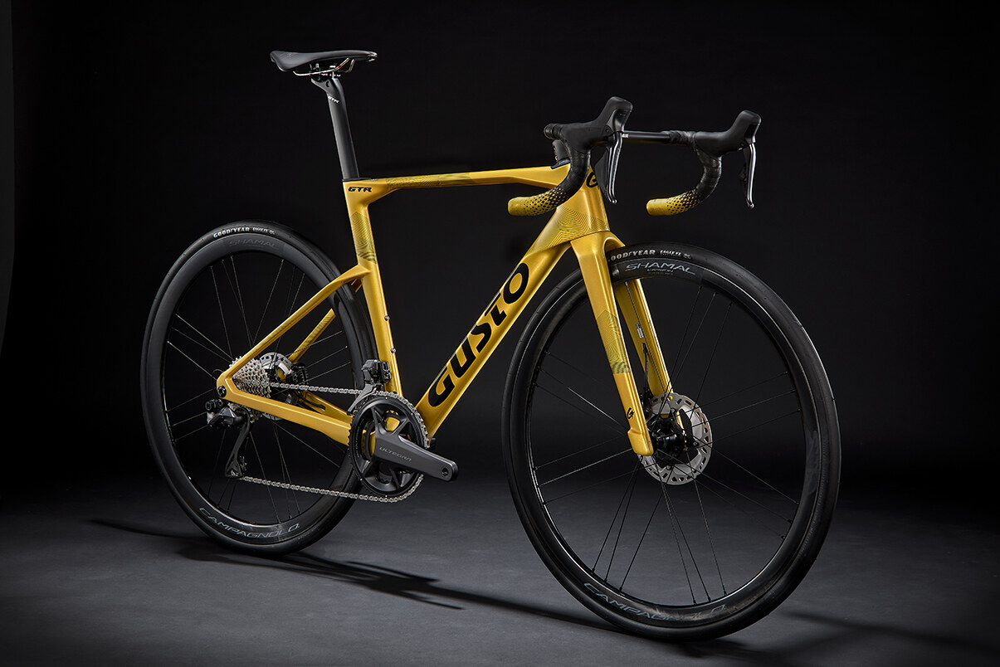
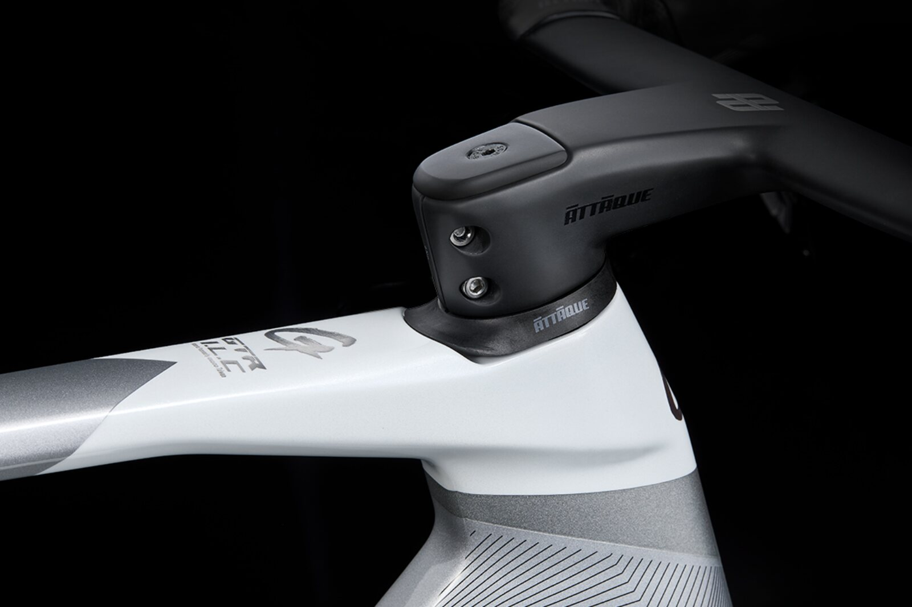
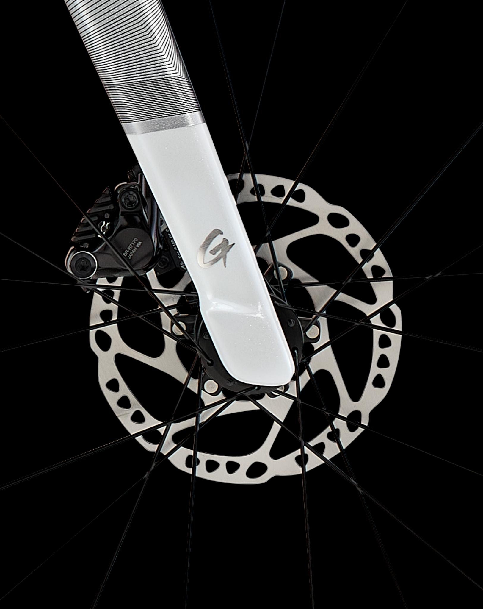
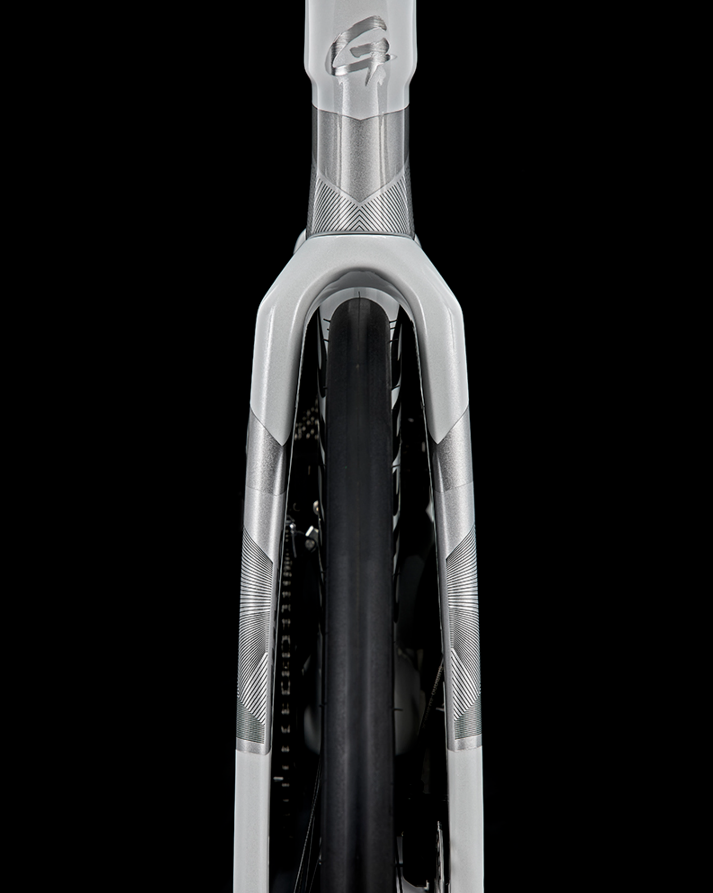

Race geometry.
High stack. Short reach. Built for real roads.

Why GTR
The GTR combines race-winning performance with all-day control. Advanced materials, refined geometry and intelligent design deliver a ride that is fast, responsive and remarkably composed.



High stack. Short reach. Built for real roads.
Carbon with vibration control for a smoother, faster ride.
Room to choose the road, from 28 to 32 mm.
Proven for competition. Built without compromise.
Specification
Geometry
Measurements in millimetres unless specified.
Scroll horizontally to compare every size.
The Gusto network
Visit an authorised Gusto dealer for fitting, sizing and availability.
Find a dealer ↗